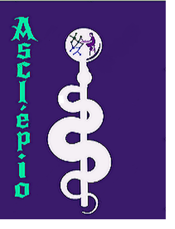

Sobre a equipe
A equipe Asclépio foi fundada por duas programadoras em 2016, surgindo com o propósito de criarem softwares
de fácil entendimento e acesso, visando trazer inovações a população ao seu redor.
Por sempre se interessarem por assuntos da medicina, seus programas eram em sua maioria voltados para a àrea
da saúde pública, procurando manter o baixo custo e a qualidade.